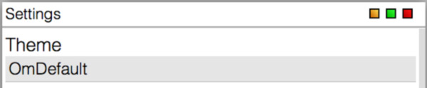
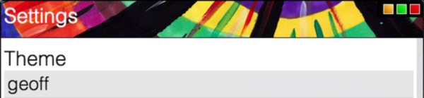
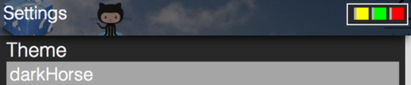
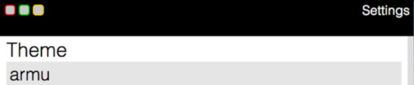

Created by
Charles Abeling
chuckfairy.com
OmBox is a general purpose JavaScript window manager. OmBox is modeled to be customizeable, dependency free, and hackable. Please stay up to date with development through GitHub or subscribing to the OmBox newsletter. Contact me through my site for any questions. OmBox is open-source and will always remain so.
To get started click on some of the links on the desktop to learn how to use OmBox in your next project.
Credit
More to come
- Awesome Angular.js integration
- Loading functions
- Npm integration
- Suggest something!
Quick start guide
- Include Js file (make sure themes is in a _themes directory)
- Create Span or div with an id of your choice
- Create OmBox Object with your customizations or relay on defaults.
<span id='om'>
<div>Hello World</div>
</span>
<script type='text/javascript' src='ombox/ombox.js'></script>
<script>
//Your JS OmBox Object
var NewOmBox = new OmBox("om", {
//Show by default
show: true
});
</script>
All Api actions are done to your instances of an OmBox. By default many actions and buttons will be put in place and the theme will be set as the default theme. Configurations are listed in the Config page. Here are some quick snippets to get you started as well.
NewOmBox.show(); //show instance of ombox
NewOmBox.close(); //close
NewOmBox.setTheme("wannaBe"); //Set to another theme (best if done in the config)
Configuration and customization
Configs are done when setting the OmBox. Below is every configuration currently on OmBox. These are also the default values.
var NewOmBox = new OmBox("om", {
//Appearence
theme: "OmDefault",
resizeable: true,
title: "",
classOn: "OmBoxSlideOn",
classOff: "OmBoxSlideOff",
//Buttons
deleteButton: true,
fullSize: true,
outButton: true,
footer: true,
//View
top: 20,
overlay: false,
});
Class Methods
OmBox also has a number of methods that can make developing dynamic data very easily.
NewOmBox.show(); //show instance of ombox
NewOmBox.close(); //close
NewOmBox.clear(); //hide display no animation
NewOmBox.refresh(1000) //Close then open after int miliseconds
NewOmBox.fullSize(); //Toggle fullsize
NewOmBox.moveOut(); //Move content to seperate page
NewOmBox.setTheme("wannaBe"); //Set to another theme (best if done in the config)
NewOmBox.setData("Some Text"); //Also works for dom elements
NewOmBox.getData(); //Gets innerHTML of content
OmDefault
wannaBe

geoff
darkHorse
armu
Click here to try them out in the settings box
Browser Support
Moveable and Scaleable
Tested Support for most modern and not so modern browsers Chrome, IE, Firefox, and Safari for mobile and desktop devices.
Animations
Browsers that support multiple transforms will display CSS3 transitions. Fallback is displaying and hiding boxes.
Minified
(Small code, no doc)Developer
(Comes with doc and full code)Repository
License
GNU General Public License
 Doc
Doc
 Download
Download